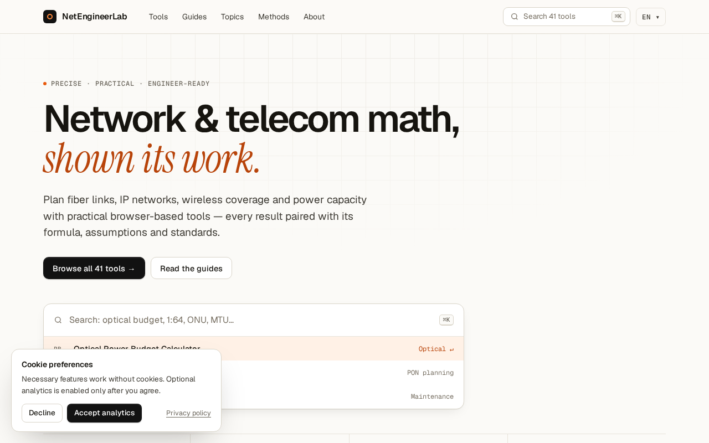
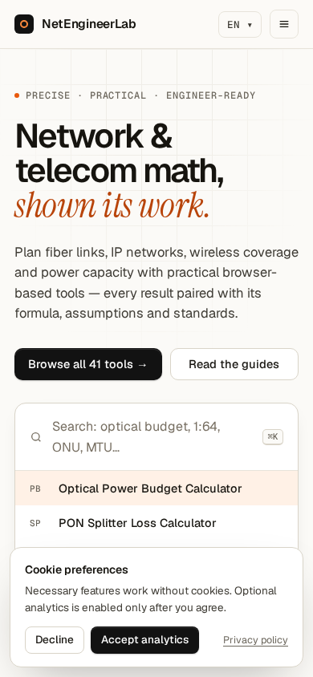
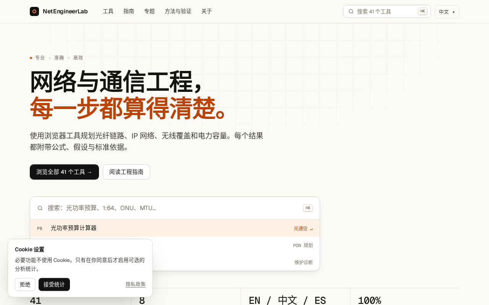
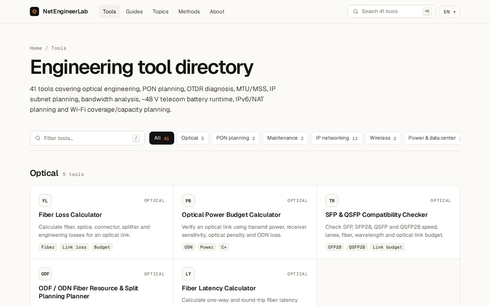
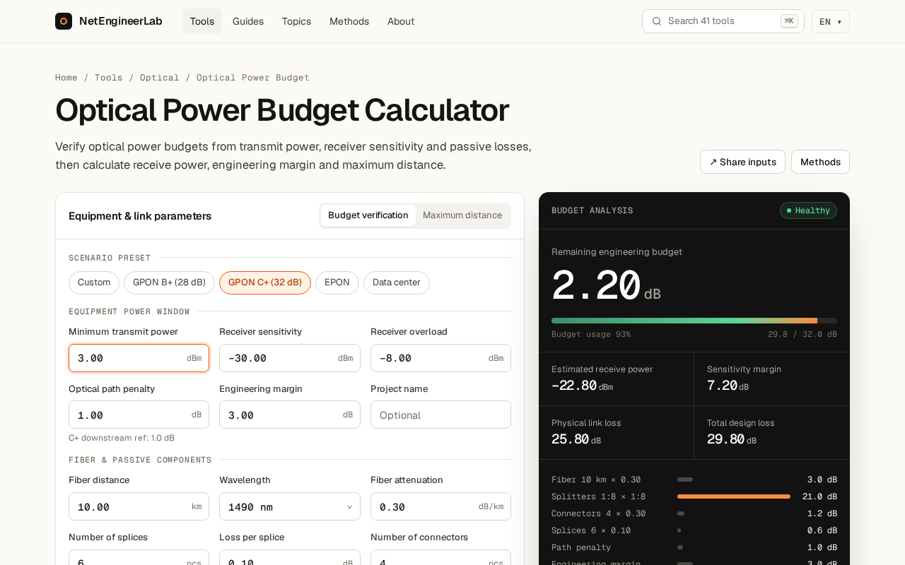
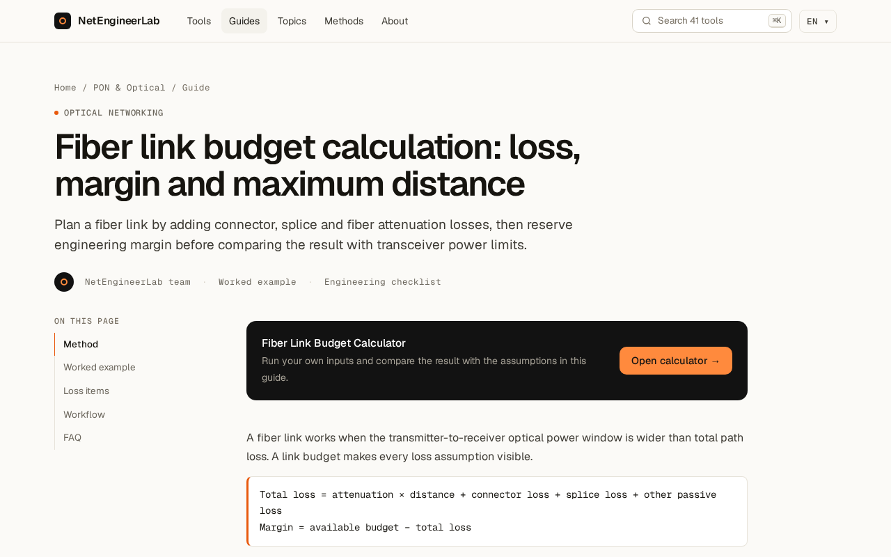

NetEngineerLab · UI v4
Static HTML mockups for the proposed Fieldbook design system (warm paper, charcoal, single orange accent). These pages are for review only: noindex, not in the sitemap, and not linked from the main navigation. v3b keeps the left workbench + right readout UX, replaces harsh black panels with a tech navy/slate readout (blue–cyan glow, soft borders), and enriches visible FAQ / methodology / standards / related-tool copy to mirror the live calculator for SEO·GEO review—without competing for index. 中文：v3b 保留左右工作台布局；右侧改为科技感深蓝面板（柔边、蓝青微光，不再大块纯黑）；并加强 FAQ、方法、标准引用与相关工具可见文案，仍 noindex。
Captured at 1280 and 390 widths during the original review.





